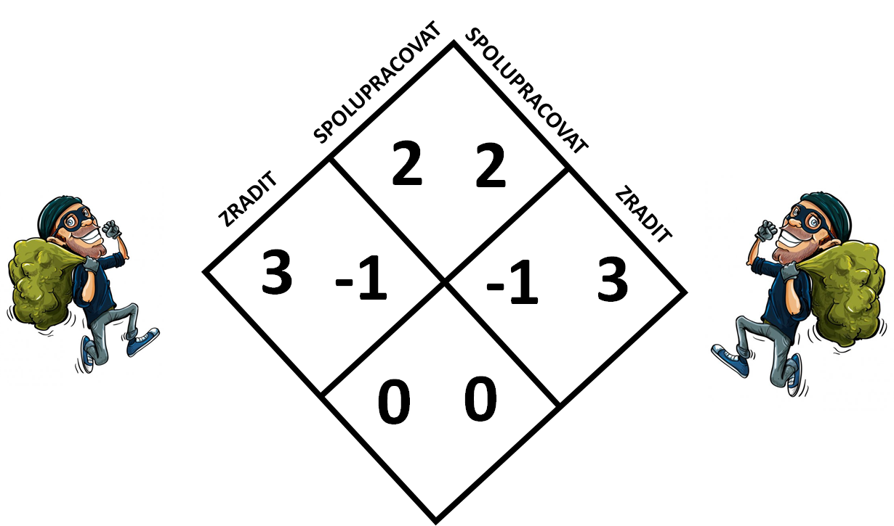
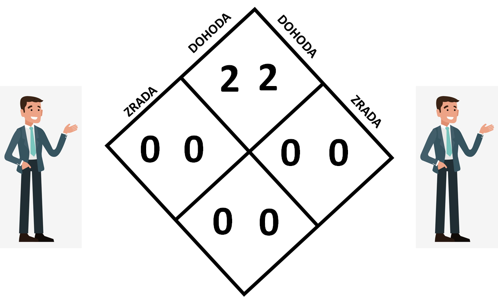

Vzpomeňme si nyní na vězňovo dilema a hon na jelena. Existuje nějaký návod, jak se v jednotlivých situacích zachovat? Pojďme se na to podívat!
Začněme tím jednodušším. Jak už jsme zmiňovali, dilema spočívá často v tom, že máme rozpor mezi zájmem kolektivu a zájmem jednotlivce. Uvědomme si, že u honu na jelena tento rozpor není! Pokud oba spolupracujeme přináší to maximální užitek jednotlivci i kolektivu. Důležité tedy je, domluvit se s protihráčem na spolupráci. I pokud se jedná o sobecky zaměřeného jedince, měl by souhasit, protože tím zvýší i vlastní užitek. Problémem u honu na jelena bývá neochota domluvit se, nebo neschopnost pojmenovat problém. Pokud tyto trable překonáme, již nám nic nestojí v cestě!
Zde je situace o dost komplikovanější. Dilema spočívající v rozporu mezi zájmem jednotlivce a zájmem společnosti je zde zřejmé. Jisté východisko nabízí věta: "ke všem ostatním se chovej tak, jak chceš, aby se oni chovali k tobě". Toto tvrzení může působit oprávněně najivním dojmem. V případě, že jste ve společnosti lidí, kteří se tohoto principu nedrží a hrají tedy strategii zrady, tak budete vykořisťováni a časem se i z nutnosti budete muset uchýlit ke strategii zrady. Jak z toho ven? Vzpomínáte si, jak jsme zmiňovali, že jednou z cest je změna samotných pravidel hry. Podívejme se podrobněji na to, co jsme tím mysleli. Nejdříve si znovu připomeneme matici vězňova dilematu:
Teď si zodpovězme zásadní otázku. Jak hrát strategii spolupráce a zároveň se nenechat vykořisťovat těmi co zrazují? Odpověď je jednoduchá. Nabídněme ostatním lidem, že s nimi budeme spolupracovat pokud oni budou spolupracovat s námi. Nabídněme jim onu strategii: "ke všem ostatním se chovej tak, jak chceš, aby se oni chovali k tobě". Pokud ji přijmou, tak ji s nimi hrajme. Pokud ji odmítají tak s nimi nespolupracujme. Ano, můžeme jim několikrát ukázat, že i přes úder do jedné tváře jsme schopni nastavit druhou, ale pokud to nepovede ke změně jejich vlastní strategie nenechme se jimi donekonečna vykořisťovat. Pokud spolupracujeme se spolupracujícími (tuto strategii nazvěme strategií dohody) a nespolupracujeme se zrádci (tuto nazývejme dále zradou) bude nová matice vypadat takto:
A zde už vidíme, že se osobní užitek shoduje s užitkem kolektivu. Dilema jsme tedy odstranili a můžeme spokojeně žít.
Zpět na dilemata Zpět na další koncepty